The Hyperbola
Learning Objectives
- Use the Distance Formula. (IA 11.1.1)
- Graph a hyperbola with center at (0,0). (IA 11.4.1)
Objective 1: Use the Distance Formula. (IA 11.1.1)
Use the Distance Formula
Use the distance formula to find the distance between the points (−5, −3) and (7,2).
Solution
| Write the Distance Formula. | |
| Label the points (–5, –3) as (x1, y1) and point (7, 2) as (x2, y2) and substitute. | |
| Simplify. | |
Practice Makes Perfect
Use the Distance Formula.
Use the Distance Formula to find the distance between the points (−2,−5) and (−14,−10).
Use the Distance Formula to find the distance between the points (10, −4) and (−1,5). Write the answer in exact form and then find the decimal approximation, rounded to the nearest tenth if needed.
Objective 2: Graph a hyperbola with center at (0,0). (IA 11.4.1)
A hyperbola is all points in a plane where the difference of their distances from two fixed points is constant. Each of the fixed points is called a focus of the hyperbola.
The line through the foci is called the transverse axis. The two points where the transverse axis intersects the hyperbola are each a vertex of the hyperbola. The midpoint of the segment joining the foci is called the center of the hyperbola. The line perpendicular to the transverse axis that passes through the center is called the conjugate axis. Each piece of the graph is called a branch of the hyperbola.
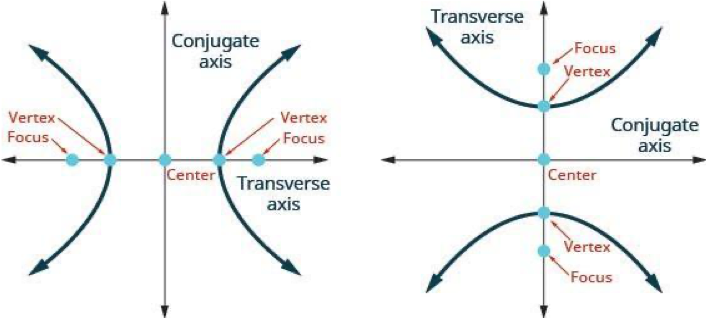
| Equation | ||
| Orientation | Transverse axis is horizontal. Opens right and left. |
Transverse axis is vertical. Opens up and down. |
| Vertices | (-a, 0), (a, 0) | (0, -a), (0, a) |
| x-intercepts | (-a, 0), (a, 0) | none) |
| y-intercepts | none | (0, -a), (0, a) |
| Rectangle | Use (±a,0), (0,±b) | Use (0,±a), (±b,0) |
| Asymptotes | ( |
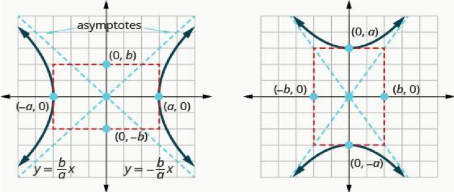
Notice that, unlike the equation of an ellipse, the denominator of is not always and the denominator of is not always .
Notice that when the term is positive, the transverse axis is on the x-axis. When the term is positive, the transverse axis is on the y-axis.
Graph a hyperbola with center at (0,0).
Graph
Solution

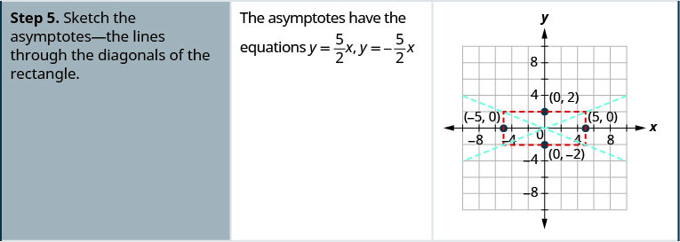

Graph
Solution
|
To write the equation in standard form, divide
each term by 64 to make the equation equal to 1. |
|
| Simplify. | |
|
Since the
y
2
-term is positive, the transverse axis is vertical.
Since then |
|
|
The vertices are on the
y
-axis,
Since then |
|
|
Sketch the rectangle intersecting the
x
-axis at
and the
y
-axis at the vertices.
Sketch the asymptotes through the diagonals of the rectangle. Draw the two branches of the hyperbola. |
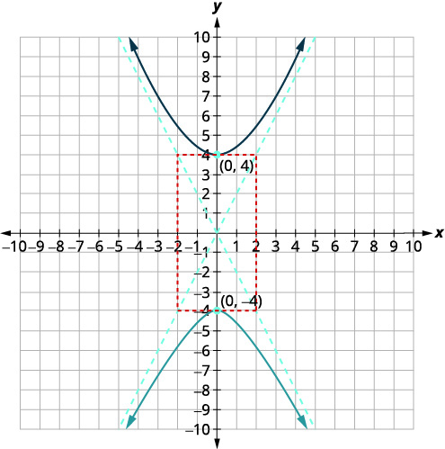 |
Practice Makes Perfect
Graph a hyperbola with center at (0,0).
Graph .
Graph .
What do paths of comets, supersonic booms, ancient Grecian pillars, and natural draft cooling towers have in common? They can all be modeled by the same type of conic. For instance, when something moves faster than the speed of sound, a shock wave in the form of a cone is created. A portion of a conic is formed when the wave intersects the ground, resulting in a sonic boom. See Figure 1.
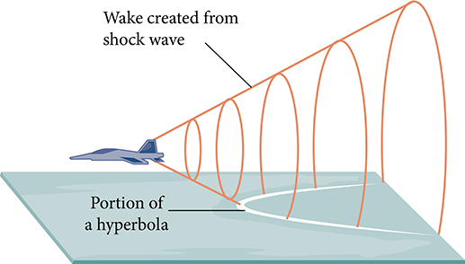
Most people are familiar with the sonic boom created by supersonic aircraft, but humans were breaking the sound barrier long before the first supersonic flight. The crack of a whip occurs because the tip is exceeding the speed of sound. The bullets shot from many firearms also break the sound barrier, although the bang of the gun usually supersedes the sound of the sonic boom.
Locating the Vertices and Foci of a Hyperbola
In analytic geometry, a hyperbola is a conic section formed by intersecting a right circular cone with a plane at an angle such that both halves of the cone are intersected. This intersection produces two separate unbounded curves that are mirror images of each other. See Figure 2.
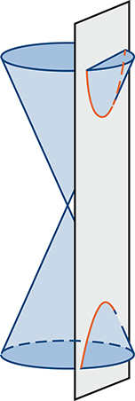
Like the ellipse, the hyperbola can also be defined as a set of points in the coordinate plane. A hyperbola is the set of all points in a plane such that the difference of the distances between and the foci is a positive constant.
Notice that the definition of a hyperbola is very similar to that of an ellipse. The distinction is that the hyperbola is defined in terms of the difference of two distances, whereas the ellipse is defined in terms of the sum of two distances.
As with the ellipse, every hyperbola has two axes of symmetry. The transverse axis is a line segment that passes through the center of the hyperbola and has vertices as its endpoints. The foci lie on the line that contains the transverse axis. The conjugate axis is perpendicular to the transverse axis and has the co-vertices as its endpoints. The center of a hyperbola is the midpoint of both the transverse and conjugate axes, where they intersect. Every hyperbola also has two asymptotes that pass through its center. As a hyperbola recedes from the center, its branches approach these asymptotes. The central rectangle of the hyperbola is centered at the origin with sides that pass through each vertex and co-vertex; it is a useful tool for graphing the hyperbola and its asymptotes. To sketch the asymptotes of the hyperbola, simply sketch and extend the diagonals of the central rectangle. See Figure 3.
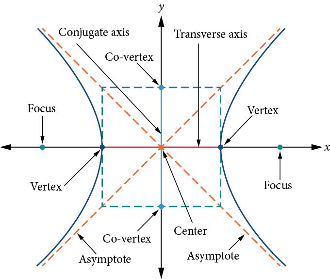
In this section, we will limit our discussion to hyperbolas that are positioned vertically or horizontally in the coordinate plane; the axes will either lie on or be parallel to the x- and y-axes. We will consider two cases: those that are centered at the origin, and those that are centered at a point other than the origin.
Deriving the Equation of a Hyperbola Centered at the Origin
Let and be the foci of a hyperbola centered at the origin. The hyperbola is the set of all points such that the difference of the distances from to the foci is constant. See Figure 4.
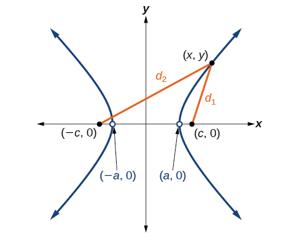
If is a vertex of the hyperbola, the distance from to is The distance from to is The difference of the distances from the foci to the vertex is
If is a point on the hyperbola, we can define the following variables:
By definition of a hyperbola, is constant for any point on the hyperbola. We know that the difference of these distances is for the vertex It follows that for any point on the hyperbola. As with the derivation of the equation of an ellipse, we will begin by applying the distance formula. The rest of the derivation is algebraic. Compare this derivation with the one from the previous section for ellipses.
This equation defines a hyperbola centered at the origin with vertices and co-vertices
![The left graph displays a hyperbola centered at the origin with a horizontal transverse axis. Its vertices are at (±a, 0), foci at (±c, 0), and its asymptotes are given by the equations y = ±(b/a)x. An auxiliary dashed rectangle, defined by x = ±a and y = ±b, is shown, with the asymptotes passing through its corners. The right graph illustrates a hyperbola centered at the origin with a vertical transverse axis. Its vertices are at (0, ±a), foci at (0, ±c), and its asymptotes are given by the equations y = ±(a/b)x. An auxiliary dashed rectangle, defined by x = ±b and y = ±a, is also shown, with the asymptotes passing through its corners.](../../media/CNX_Precalc_Figure_10_02_004.jpg)
Locating a Hyperbola’s Vertices and Foci
Identify the vertices and foci of the hyperbola with equation
Solution
The equation has the form so the transverse axis lies on the y-axis. The hyperbola is centered at the origin, so the vertices serve as the y-intercepts of the graph. To find the vertices, set and solve for
The foci are located at Solving for
Therefore, the vertices are located at and the foci are located at
Writing Equations of Hyperbolas in Standard Form
Just as with ellipses, writing the equation for a hyperbola in standard form allows us to calculate the key features: its center, vertices, co-vertices, foci, asymptotes, and the lengths and positions of the transverse and conjugate axes. Conversely, an equation for a hyperbola can be found given its key features. We begin by finding standard equations for hyperbolas centered at the origin. Then we will turn our attention to finding standard equations for hyperbolas centered at some point other than the origin.
Hyperbolas Centered at the Origin
Reviewing the standard forms given for hyperbolas centered at we see that the vertices, co-vertices, and foci are related by the equation Note that this equation can also be rewritten as This relationship is used to write the equation for a hyperbola when given the coordinates of its foci and vertices.
Finding the Equation of a Hyperbola Centered at (0,0) Given its Foci and Vertices
What is the standard form equation of the hyperbola that has vertices and foci
Solution
The vertices and foci are on the x-axis. Thus, the equation for the hyperbola will have the form
The vertices are so and
The foci are so and
Solving for we have
Finally, we substitute and into the standard form of the equation, The equation of the hyperbola is as shown in Figure 6.
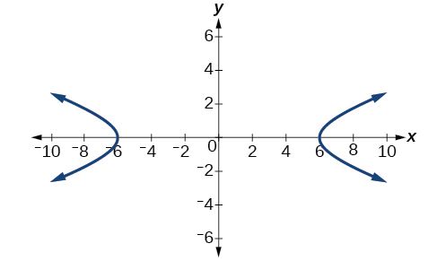
Hyperbolas Not Centered at the Origin
Like the graphs for other equations, the graph of a hyperbola can be translated. If a hyperbola is translated units horizontally and units vertically, the center of the hyperbola will be This translation results in the standard form of the equation we saw previously, with replaced by and replaced by
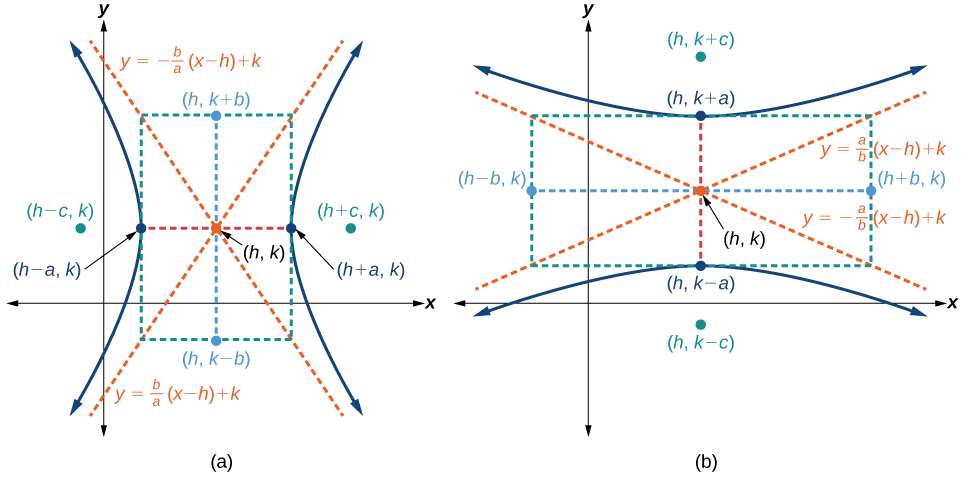
Like hyperbolas centered at the origin, hyperbolas centered at a point have vertices, co-vertices, and foci that are related by the equation We can use this relationship along with the midpoint and distance formulas to find the standard equation of a hyperbola when the vertices and foci are given.
Finding the Equation of a Hyperbola Centered at (h, k) Given its Foci and Vertices
What is the standard form equation of the hyperbola that has vertices at and and foci at and
Solution
The y-coordinates of the vertices and foci are the same, so the transverse axis is parallel to the x-axis. Thus, the equation of the hyperbola will have the form
First, we identify the center, The center is halfway between the vertices and Applying the midpoint formula, we have
Next, we find The length of the transverse axis, is bounded by the vertices. So, we can find by finding the distance between the x-coordinates of the vertices.
Now we need to find The coordinates of the foci are So and We can use the x-coordinate from either of these points to solve for Using the point and substituting
Next, solve for using the equation
Finally, substitute the values found for and into the standard form of the equation.
Graphing Hyperbolas Centered at the Origin
When we have an equation in standard form for a hyperbola centered at the origin, we can interpret its parts to identify the key features of its graph: the center, vertices, co-vertices, asymptotes, foci, and lengths and positions of the transverse and conjugate axes. To graph hyperbolas centered at the origin, we use the standard form for horizontal hyperbolas and the standard form for vertical hyperbolas.
Graphing a Hyperbola Centered at (0, 0) Given an Equation in Standard Form
Graph the hyperbola given by the equation Identify and label the vertices, co-vertices, foci, and asymptotes.
Solution
The standard form that applies to the given equation is Thus, the transverse axis is on the y-axis
The coordinates of the vertices are
The coordinates of the co-vertices are
The coordinates of the foci are where Solving for we have
Therefore, the coordinates of the foci are
The equations of the asymptotes are
Plot and label the vertices and co-vertices, and then sketch the central rectangle. Sides of the rectangle are parallel to the axes and pass through the vertices and co-vertices. Sketch and extend the diagonals of the central rectangle to show the asymptotes. The central rectangle and asymptotes provide the framework needed to sketch an accurate graph of the hyperbola. Label the foci and asymptotes, and draw a smooth curve to form the hyperbola, as shown in Figure 8.
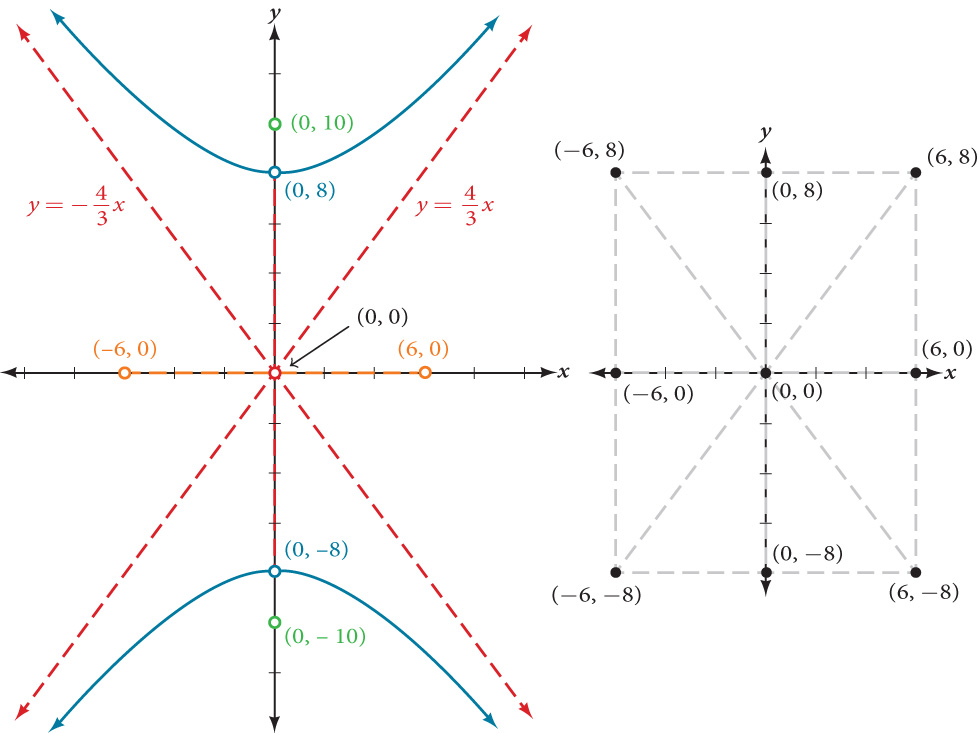
Graphing Hyperbolas Not Centered at the Origin
Graphing hyperbolas centered at a point other than the origin is similar to graphing ellipses centered at a point other than the origin. We use the standard forms for horizontal hyperbolas, and for vertical hyperbolas. From these standard form equations we can easily calculate and plot key features of the graph: the coordinates of its center, vertices, co-vertices, and foci; the equations of its asymptotes; and the positions of the transverse and conjugate axes.
Graphing a Hyperbola Centered at (h, k) Given an Equation in General Form
Graph the hyperbola given by the equation Identify and label the center, vertices, co-vertices, foci, and asymptotes.
Solution
Start by expressing the equation in standard form. Group terms that contain the same variable, and move the constant to the opposite side of the equation.
Factor the leading coefficient of each expression.
Complete the square twice. Remember to balance the equation by adding the same constants to each side.
Rewrite as perfect squares.
Divide both sides by the constant term to place the equation in standard form.
- the center of the ellipse is
- the coordinates of the vertices are or and
- the coordinates of the co-vertices are or and
- the coordinates of the foci are where Solving for we have
Therefore, the coordinates of the foci are and
The equations of the asymptotes are
Next, we plot and label the center, vertices, co-vertices, foci, and asymptotes and draw smooth curves to form the hyperbola, as shown in Figure 9.
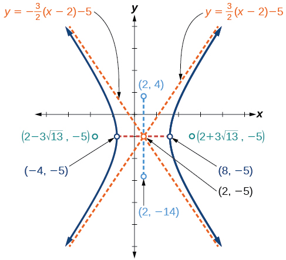
Solving Applied Problems Involving Hyperbolas
As we discussed at the beginning of this section, hyperbolas have real-world applications in many fields, such as astronomy, physics, engineering, and architecture. The design efficiency of hyperbolic cooling towers is particularly interesting. Cooling towers are used to transfer waste heat to the atmosphere and are often touted for their ability to generate power efficiently. Because of their hyperbolic form, these structures are able to withstand extreme winds while requiring less material than any other forms of their size and strength. See Figure 10. For example, a 500-foot tower can be made of a reinforced concrete shell only 6 or 8 inches wide!
The first hyperbolic towers were designed in 1914 and were 35 meters high. Today, the tallest cooling towers are in France, standing a remarkable 170 meters tall. In Example 9 we will use the design layout of a cooling tower to find a hyperbolic equation that models its sides.
Solving Applied Problems Involving Hyperbolas
The design layout of a cooling tower is shown in Figure 11. The tower stands 179.6 meters tall. The diameter of the top is 72 meters. At their closest, the sides of the tower are 60 meters apart.
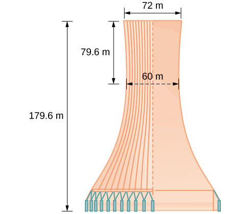
Find the equation of the hyperbola that models the sides of the cooling tower. Assume that the center of the hyperbola—indicated by the intersection of dashed perpendicular lines in the figure—is the origin of the coordinate plane. Round final values to four decimal places.
Solution
We are assuming the center of the tower is at the origin, so we can use the standard form of a horizontal hyperbola centered at the origin: where the branches of the hyperbola form the sides of the cooling tower. We must find the values of and to complete the model.
First, we find Recall that the length of the transverse axis of a hyperbola is This length is represented by the distance where the sides are closest, which is given as meters. So, Therefore, and
To solve for we need to substitute for and in our equation using a known point. To do this, we can use the dimensions of the tower to find some point that lies on the hyperbola. We will use the top right corner of the tower to represent that point. Since the y-axis bisects the tower, our x-value can be represented by the radius of the top, or 36 meters. The y-value is represented by the distance from the origin to the top, which is given as 79.6 meters. Therefore,
The sides of the tower can be modeled by the hyperbolic equation
Key Equations
| Hyperbola, center at origin, transverse axis on x-axis | |
| Hyperbola, center at origin, transverse axis on y-axis | |
| Hyperbola, center at transverse axis parallel to x-axis | |
| Hyperbola, center at transverse axis parallel to y-axis |
Key Concepts
- A hyperbola is the set of all points in a plane such that the difference of the distances between and the foci is a positive constant.
- The standard form of a hyperbola can be used to locate its vertices and foci. See Example 4.
- When given the coordinates of the foci and vertices of a hyperbola, we can write the equation of the hyperbola in standard form. See Example 5 and Example 6.
- When given an equation for a hyperbola, we can identify its vertices, co-vertices, foci, asymptotes, and lengths and positions of the transverse and conjugate axes in order to graph the hyperbola. See Example 7 and Example 8.
- Real-world situations can be modeled using the standard equations of hyperbolas. For instance, given the dimensions of a natural draft cooling tower, we can find a hyperbolic equation that models its sides. See Example 9.
Section Exercises
Verbal
Define a hyperbola in terms of its foci.
Solution
A hyperbola is the set of points in a plane the difference of whose distances from two fixed points (foci) is a positive constant.
What can we conclude about a hyperbola if its asymptotes intersect at the origin?
What must be true of the foci of a hyperbola?
Solution
The foci must lie on the transverse axis and be in the interior of the hyperbola.
If the transverse axis of a hyperbola is vertical, what do we know about the graph?
Where must the center of hyperbola be relative to its foci?
Solution
The center must be the midpoint of the line segment joining the foci.
Algebraic
For the following exercises, determine whether the following equations represent hyperbolas. If so, write in standard form.
Solution
yes
Solution
yes
For the following exercises, write the equation for the hyperbola in standard form if it is not already, and identify the vertices and foci, and write equations of asymptotes.
Solution
vertices: foci: asymptotes:
Solution
vertices: foci: asymptotes:
Solution
vertices: foci: asymptotes:
Solution
vertices: foci: asymptotes:
Solution
vertices: foci: asymptotes:
Solution
vertices: foci: asymptotes:
Solution
vertices: foci: asymptotes:
Solution
vertices: foci: asymptotes:
For the following exercises, find the equations of the asymptotes for each hyperbola.
Solution
Solution
Graphical
For the following exercises, sketch a graph of the hyperbola, labeling vertices and foci.
Solution
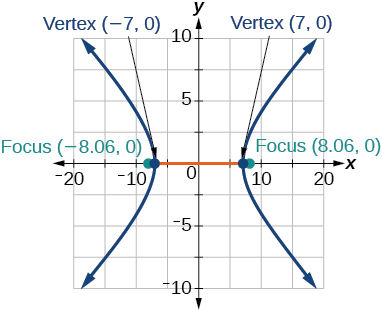
Solution
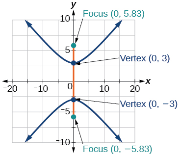
Solution
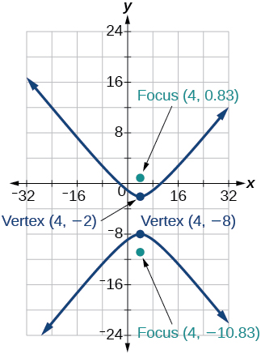
Solution
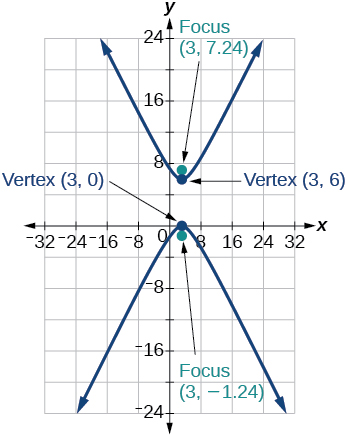
Solution

Solution
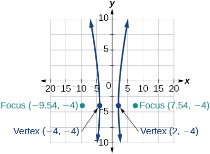
Solution

For the following exercises, given information about the graph of the hyperbola, find its equation.
Vertices at and and one focus at
Solution
Vertices at and and one focus at
Vertices at and and one focus at
Solution
Center: vertex: one focus:
Center: vertex: one focus:
Solution
Center: vertex: one focus:
For the following exercises, given the graph of the hyperbola, find its equation.
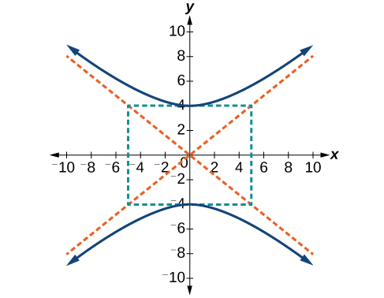
Solution
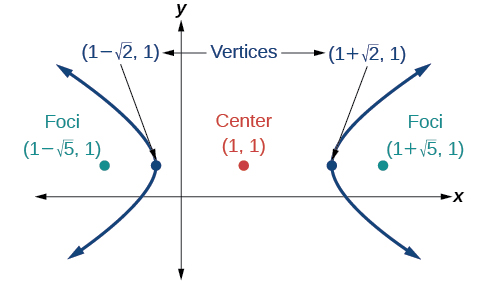
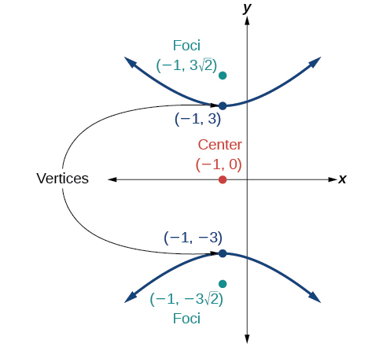
Solution
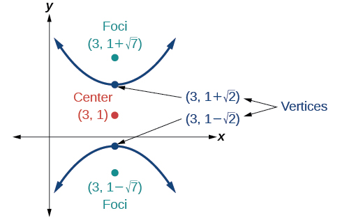
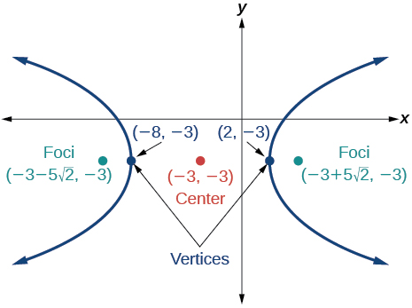
Solution
Extensions
For the following exercises, express the equation for the hyperbola as two functions, with as a function of Express as simply as possible. Use a graphing calculator to sketch the graph of the two functions on the same axes.
Solution
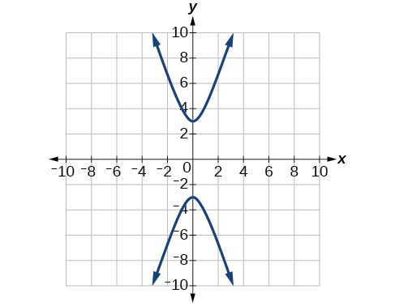
Solution

Real-World Applications
For the following exercises, a hedge is to be constructed in the shape of a hyperbola near a fountain at the center of the yard. Find the equation of the hyperbola and sketch the graph.
The hedge will follow the asymptotes and its closest distance to the center fountain is 5 yards.
Solution
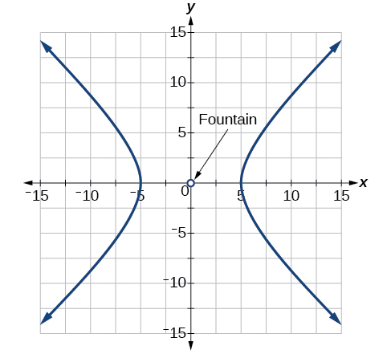
The hedge will follow the asymptotes and its closest distance to the center fountain is 6 yards.
The hedge will follow the asymptotes and and its closest distance to the center fountain is 10 yards.
Solution
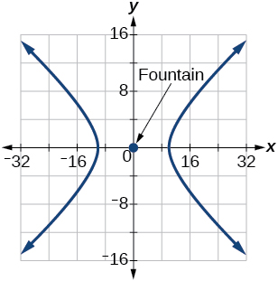
The hedge will follow the asymptotes and and its closest distance to the center fountain is 12 yards.
The hedge will follow the asymptotes and and its closest distance to the center fountain is 20 yards.
Solution
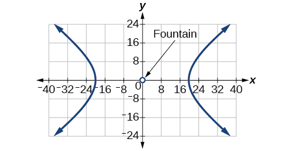
For the following exercises, assume an object enters our solar system and we want to graph its path on a coordinate system with the sun at the origin and the x-axis as the axis of symmetry for the object's path. Give the equation of the flight path of each object using the given information.
The object enters along a path approximated by the line and passes within 1 au (astronomical unit) of the sun at its closest approach, so that the sun is one focus of the hyperbola. It then departs the solar system along a path approximated by the line
The object enters along a path approximated by the line and passes within 0.5 au of the sun at its closest approach, so the sun is one focus of the hyperbola. It then departs the solar system along a path approximated by the line
Solution
The object enters along a path approximated by the line and passes within 1 au of the sun at its closest approach, so the sun is one focus of the hyperbola. It then departs the solar system along a path approximated by the line
The object enters along a path approximated by the line and passes within 1 au of the sun at its closest approach, so the sun is one focus of the hyperbola. It then departs the solar system along a path approximated by the line
Solution
The object enters along a path approximated by the line and passes within 1 au of the sun at its closest approach, so the sun is one focus of the hyperbola. It then departs the solar system along a path approximated by the line